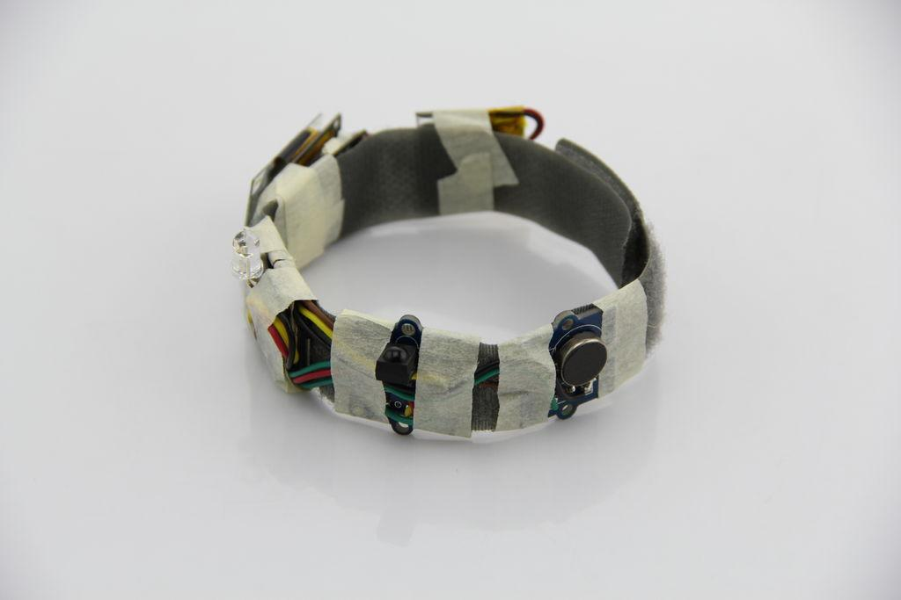
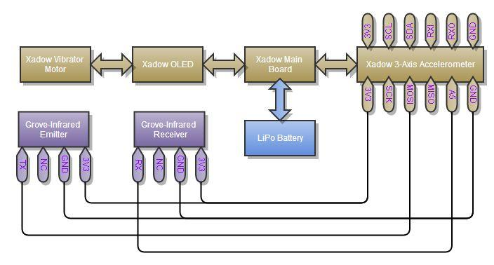
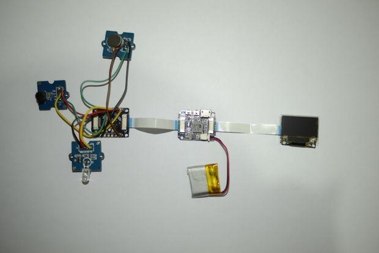
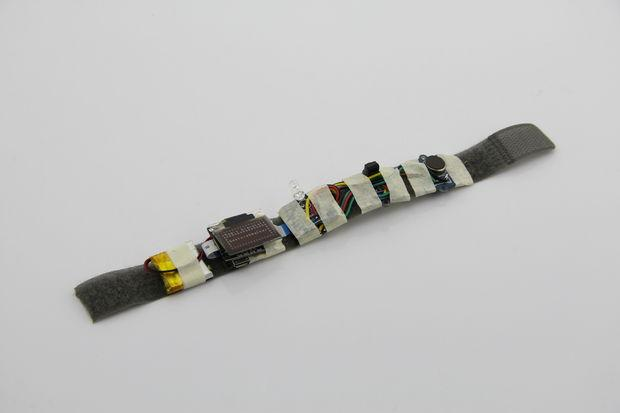
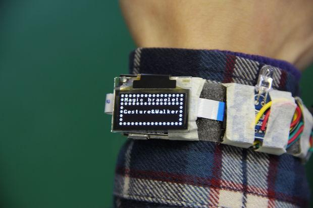
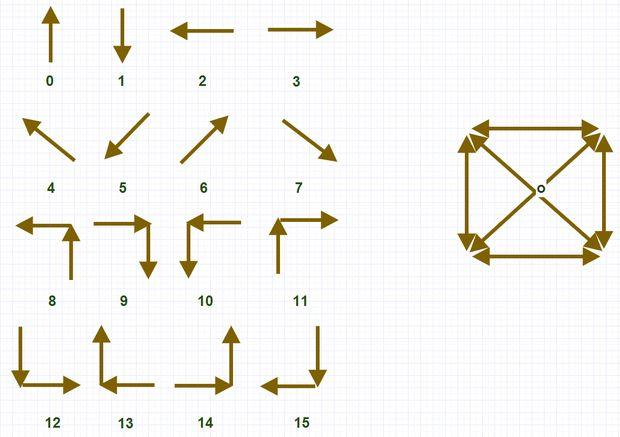

Magic Bracelet is a gesture recognition device with Infrared Emitter & Receiver. You can control(turn on/off basically) your appliances(such as TV/ air-condition/ fan and other types of remote control devices) with gesture movement.

In order to achieve the gesture recognition, we use 3-Axis Digital Accelerometer module to get acceleration value of gesture motion and then process data with our tidy but efficient algorithm.
Follow the basic workflow of Xadow:
Picture of Bill of Materials the materials that you needed depends on what you want to do. To realize gesture recognition, you just need the first four module list as follow, but if you want to control your household appliances, all list is in need.
1. Xadow Main Board 2. Xadow 3-Axis Accelerometer 3. Xadow Vibrator Motor(or Grove - Vibrator) 4. Xadow OLED 5. Infrared Emitter 6. Infrared Receiver
Todo: Add links here
All Components are here.


In order to make your bracelet work normally, you have to do some welding job. The principle diagram of the hardware connection is as follow. As described in the figure, Infrared Emitter's TX pin has been connected to MOSI pin(we use MOSI pin as a normal digital output pin to realize infrared signal output )and Infrared Receiver's RX pin has been connected to A5 pin(we use A5 pin as a normal input pin to realize infrared signal input ) . Physical connection is as shown in the picture, here we use Grove-Vibrator rather than Xadow Vibration Motor, but it makes no difference!


now the Magic Bracelet has been connected in hardware, but it is still not a really bracelet. We must put these modules assembled into a bracelet. Here, we secure these modules in a cloth belt ring. It looks a little crude, right? sorry for my poor manual skill. :D

the Magic Bracelet contains two parts in software. the first is gesture recognition algorithm and the second is Send/Recv infrared signal.
1. gesture recognition algorithm what we used is a simplified but efficient gesture recognition algorithm.We have upload it to github, you can find it here. In order to improve the recognition rate, we have defined 16 kinds of gesture movements as shown in the graph, these all are very simple gesture that it is easier to remember. You can define one of the gesture movements to the electrical appliance that you want to control remotely.
2. Send/Recv infrared signal In step 2, A5 pin has been used as a infrared Receive pin and MOSI pin has been used as a infrared emitter pin. We import a IRSendRev library, and you can also find it in github, the link is here. In fact, we have to modify this library to make Magic Bracelet work because that MOSI pin is not a PWM pin, we have to realize software PWM on digital pin.
we have uploaded all the source code to github, you can find it here.
Here we introduce how to use our Magic Bracelet control of the air condition.
1. Power On Power on our bracelet, the OLED panel will show "Gesture&Walker"(Walker is still in development) .
2. Wake Up Swing your arm to wake up the Magic Bracelet. we use accelerometer to detect the movement of arm, when in high speed vibration mode, we will wake up Magic Bracelet. You can define the swing time by yourself, but here, it is 3 seconds.
3. Switch Mode After wake up, the vibrator will vibrate for 3 seconds to remind you of selecting mode. you will see "Switch mode" interface in OLED panel. here we offer two modes: 1. Gesture 2. IR Record. the former is used for gesture recognition and the latter is used to store the infrared signal of household appliances. You can tilt your arms to the left or right to choose your model. As a rule, tilting left stands for Number 1 and tilting right stands for 2.
4. Draw gesture If you choose the gesture mode, you can swing your arm to draw the gesture. Magic Bracelet will wait till your arm stop moving,then it will calculate the matching gesture according to the movement of your arm and show the matching result on OLED panel.
5. Launch Infrared Signal Once the matching is successful, Magic Bracelet will read the infrared signal according to the matching result, then infrared emission will launch the infrared signal. so you should aim at the household appliance which you want to power on or power off.
Here is our brief demonstration video